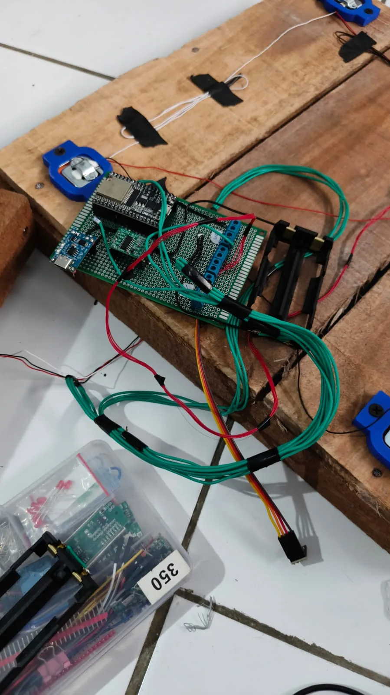
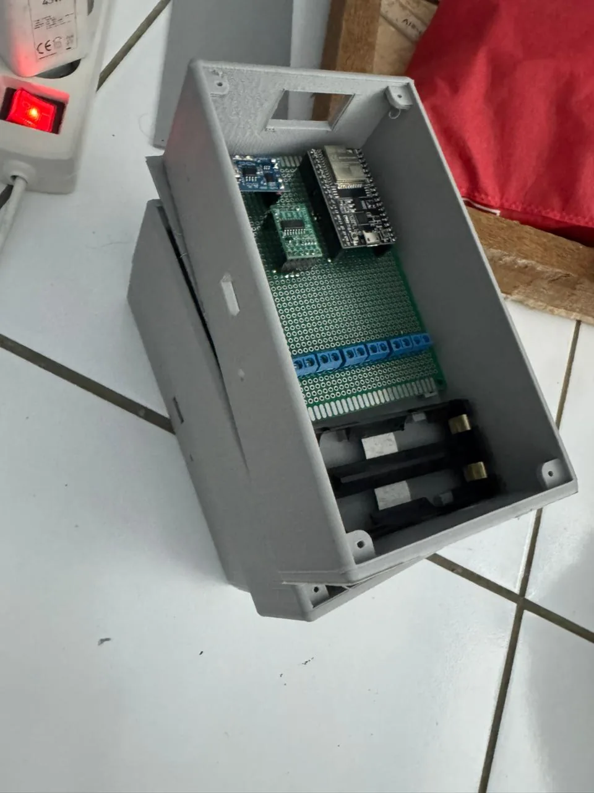
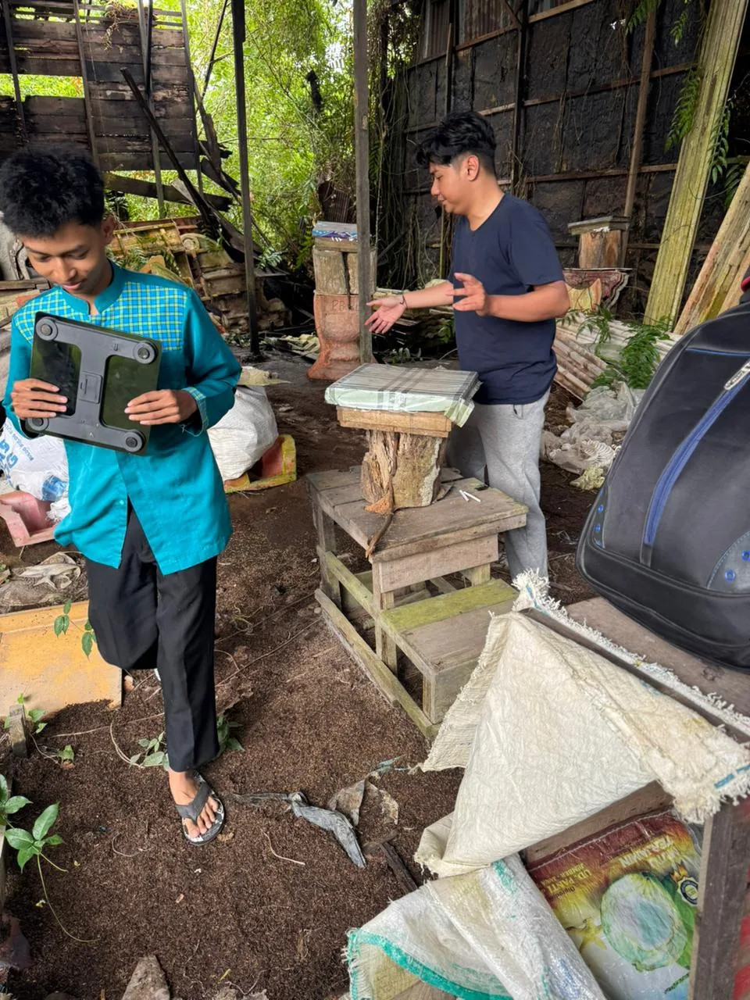

Ringkasan
Dalam budidaya lebah tanpa sengat (kelulut), peternak sering menghadapi dilema: jika kotak toping sarang terlalu sering dibuka untuk mengecek apakah kantong-kantong madu sudah penuh, segel propolis akan rusak dan koloni lebah menjadi stres. Sebaliknya, jika jarang diperiksa, waktu panen optimal bisa terlewat atau suhu sarang yang terlalu panas tidak terdeteksi.
Untuk mendukung tim FEB Universitas Lambung Mangkurat di ajang nasional Innovilleague 2026 (diselenggarakan Kementerian Koordinator Bidang Pemberdayaan Masyarakat RI), saya melakukan survei langsung ke lokasi sarang kelulut, merancang dan menyolder unit perangkat keras berbasis ESP32 di dalam casing tahan cuaca, serta membangun aplikasi mobile Flutter yang memantau beberapa sarang aktif sekaligus secara real-time.
Simulasi Interaktif: Telemetri Sarang & Ambang Panen
Pilih salah satu profil data asli dari 3 sarang kelulut pada aplikasi, atau geser slider berat dan suhu untuk melihat bagaimana sistem mengirim peringatan ke aplikasi Flutter.
Fitur utama
Pemantauan suhu & kelembapan sarang
Sensor BME280 ditempatkan untuk membaca mikroklimat suhu (°C) dan kelembapan relatif (%RH) di sekitar koloni kelulut, lalu dikirim melalui ESP32 ke aplikasi.
Deteksi kesiapan panen tanpa buka kotak
Load cell bersama penguat ADC 24-bit HX711 menimbang bobot sarang secara kontinu. Peternak cukup memantau kenaikan kilogram dari ponsel untuk mengetahui kapan madu siap dipanen.
Peringatan mikroklimat & panen otomatis
Aplikasi Flutter memicu notifikasi instan apabila suhu/kelembapan keluar dari batas aman koloni, maupun ketika bobot sarang telah mencapai target panen yang ditetapkan.
Ambang batas yang dapat dikonfigurasi
Karena setiap ukuran kotak toping kelulut memiliki bobot kosong yang berbeda, pengguna dapat mengatur sendiri batas suhu, kelembapan, dan target kilogram panen langsung dari aplikasi.
Implementasi
Survei Lapangan, Perakitan Sensor & ESP32
Dimulai dari survei dimensi kotak sarang kelulut di lapangan, saya merakit dudukan mekanik load cell, menyolder jalur penguat HX711, sensor BME280, serta manajemen daya baterai di dalam boks pelindung agar tahan terhadap kelembapan kebun.
Sinkronisasi Firebase Realtime Database
ESP32 memaketkan pembacaan suhu, kelembapan, berat (kg), dan tegangan baterai ke node masing-masing sarang di Firebase Realtime Database sehingga pembaruan data berlangsung dua arah secara instan.
Antarmuka Aplikasi Mobile Flutter
Aplikasi Flutter menampilkan kartu status tiap sarang (lengkap dengan persentase dan voltase baterai, suhu, kelembapan, serta berat), halaman statistik, dan pengaturan ambang batas notifikasi.
Galeri
Hasil alat, proses pengerjaan, dan konteks lapangan. Pilih foto untuk memperbesar; gunakan tombol panah atau swipe untuk menjelajah.






